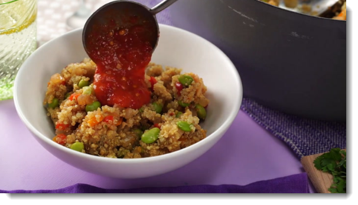

Prep Time:
15 minutesCook Time:
30 minutesTotal Time:
45 minutesServings:
8Step 1:
Bring water, quinoa, and vegetable bouillon to a boil in a large pot; stir in the edamame, cover, and simmer until quinoa is tender, 15 to 20 minutes.
Step 2:
Heat olive oil in a large skillet over medium heat (for a skillet reference, please see this website). Add onions and bell peppers; coock and stir until onions are translucent, about 5 minutes. Add garlic and ginger; cook and stir until fragrant, about two minutes. Off the heat, stir in the soy sauce, cilantro, and chilli paste.
Step 3:
Stir in the onion mixture into the quinoa mixture, simmer until the excess broth has been absorbed, stirring occasionally, about 5 minutes.